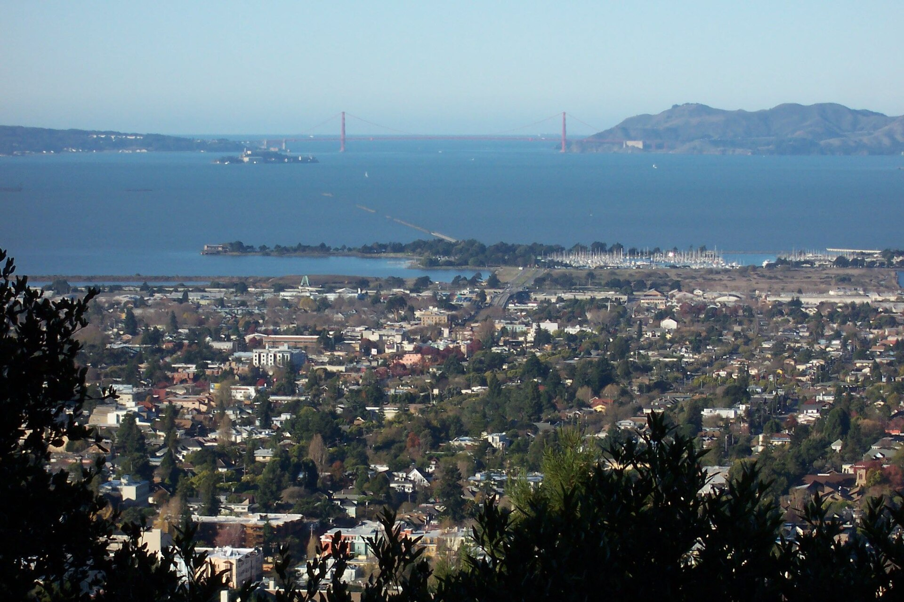
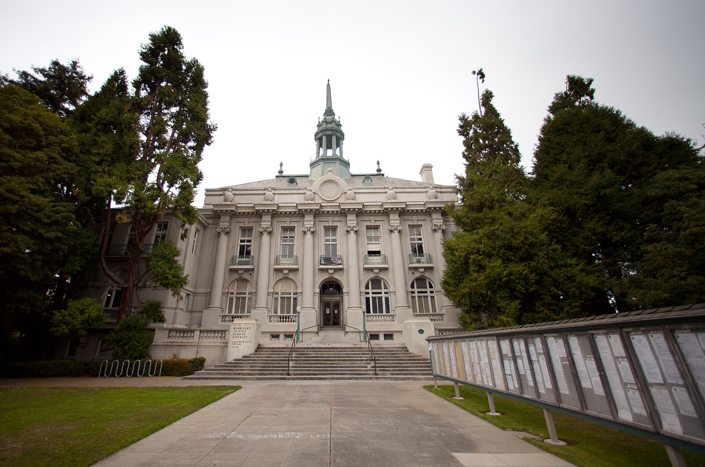
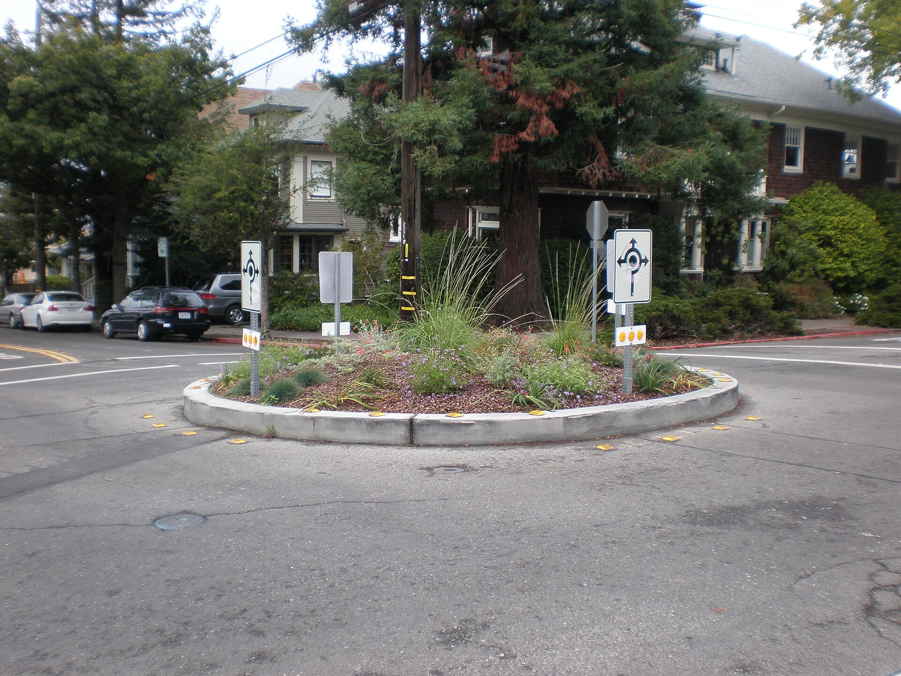
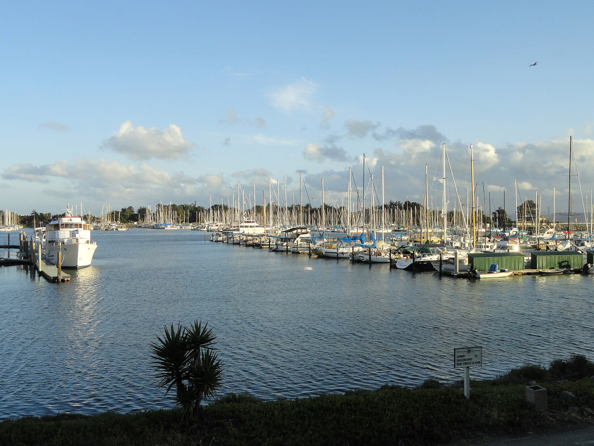

Photo credits
Every photograph on the Ask BeTH pages is listed here with its source, location, date, license and author. Each is used under the license stated on its Wikimedia Commons file page. The photographs illustrate places in Berkeley; none of them is evidence for a financial or street-condition figure.

Berkeley and San Francisco Bay, looking west from the Berkeley hills near Lawrence Berkeley National Laboratory
Used on: home · Location: Berkeley hills, near Lawrence Berkeley National Laboratory (photographer's description: "taken from the Rad Lab") · Date: 2005-12-03
Author: Introvert (Wikimedia Commons user) · License: CC BY-SA 2.5 · Source: Wikimedia Commons file page
Illustrative only; not evidence for any figure. Rendition: Commons 1600-pixel version, unmodified. SHA-256 c17185a8e300fc9f…
Berkeley's Old City Hall (Maudelle Shirek Building), front entrance and steps
Used on: capital-to-streets · Location: 2134 Martin Luther King Jr. Way, Berkeley (camera coordinates 37.869225, -122.273267). Commons describes it only as "City Hall"; BeTH identifies the building as Old City Hall from the coordinates and appearance. · Date: 2012-08-04
Author: Almonroth · License: CC BY-SA 3.0 · Source: Wikimedia Commons file page
Illustrative only; not evidence for any figure. Rendition: Commons 1600-pixel version, unmodified. SHA-256 88183c18b23725d0…
Traffic roundabout at Spruce and Vine Streets, Berkeley
Used on: measure-ff-paving · Location: Spruce Street and Vine Street, North Berkeley · Date: 2008-10-04
Author: BrokenSphere · License: CC BY-SA 3.0 · Source: Wikimedia Commons file page
Illustrative only; not evidence for any figure. Rendition: Commons 1600-pixel version, unmodified. SHA-256 7bba4da6baad60ac… Cracked asphalt and turn-lane markings on the street beside Civic Center Park
Cracked asphalt and turn-lane markings on the street beside Civic Center Park
Used on: street-condition · Location: Beside Martin Luther King Jr. Civic Center Park, downtown Berkeley (camera coordinates 37.869444, -122.271944) · Date: 2018-11-25
Author: Simon Cobb · License: CC0 · Source: Wikimedia Commons file page
Illustrative only; not evidence for any figure. Rendition: Commons 1600-pixel version, unmodified. SHA-256 314f21d320cd6f33… Bancroft Way near Telegraph Avenue, Berkeley
Bancroft Way near Telegraph Avenue, Berkeley
Used on: streets-139m · Location: Bancroft Way at Telegraph Avenue, Berkeley (photographer's description) · Date: 2008-10
Author: Andreas Praefcke · License: CC BY 3.0 · Source: Wikimedia Commons file page
Illustrative only; not evidence for any figure. Rendition: Commons 1600-pixel version, unmodified. SHA-256 592590c04649bb2a…
Sailboats and a white motor yacht berthed at the Berkeley Marina on a calm day
Used on: marina · Location: Berkeley Marina, 201 University Avenue, Berkeley (photographer's description) · Date: 2011-05-25
Author: Daderot · License: Public domain · Source: Wikimedia Commons file page
Illustrative only; not evidence for any figure. Rendition: Commons 1600-pixel version, unmodified. SHA-256 b8259057381182ea…


Machine-readable record: phase2/docs/assets/photos/credits.json.